How HR leaders can move from AI anxiety to organisational advantage — and why this is your mandate, not IT's.
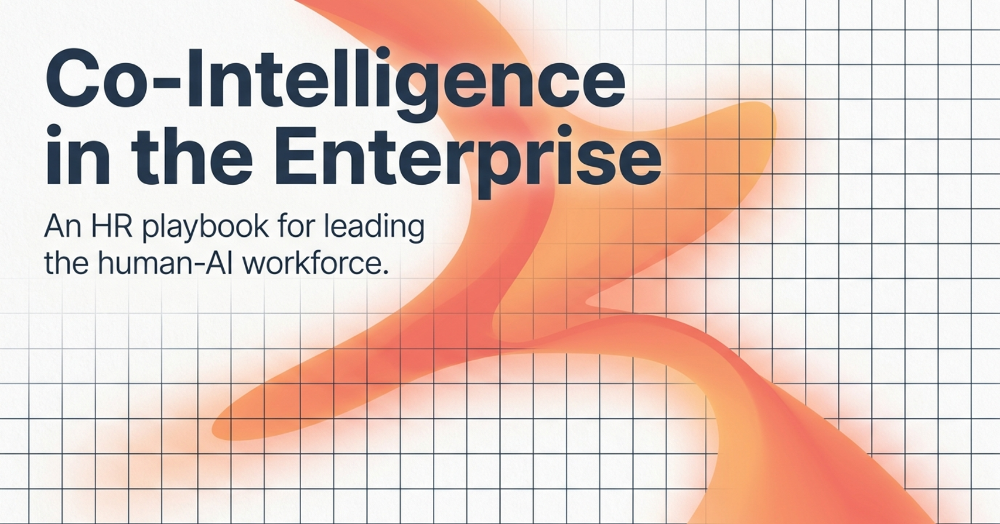
A term coined by Professor Ethan Mollick to describe a future where humans and AI work together as active, smart collaborators — not where AI replaces humans, but where both are better together.
This is not a software rollout briefing. It is an HR playbook — covering the mindset shifts, change management challenges, and workforce strategies that every people leader needs to navigate the human-AI era.
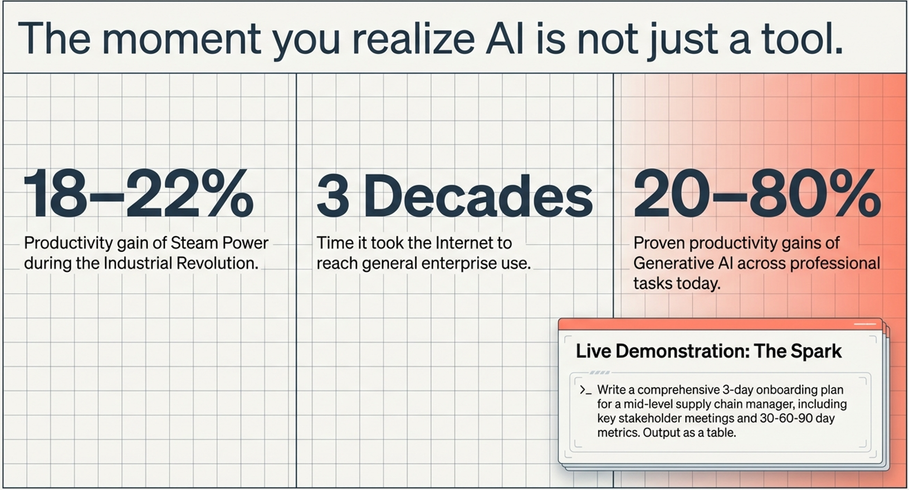
Prompt to run live: "Write a comprehensive 3-day onboarding plan for a mid-level supply chain manager, including key stakeholder meetings and 30-60-90 day metrics. Output as a table."
Watch the room's reaction when the output appears in seconds. That moment of recognition — "this changes something" — is what we are here to manage together.
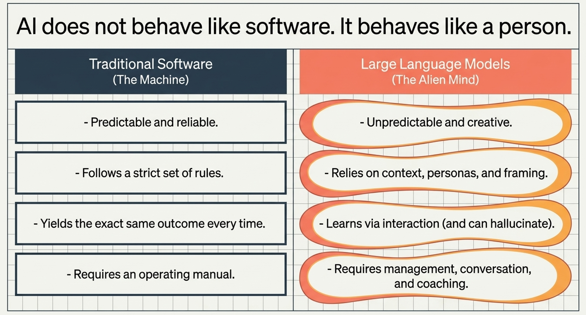
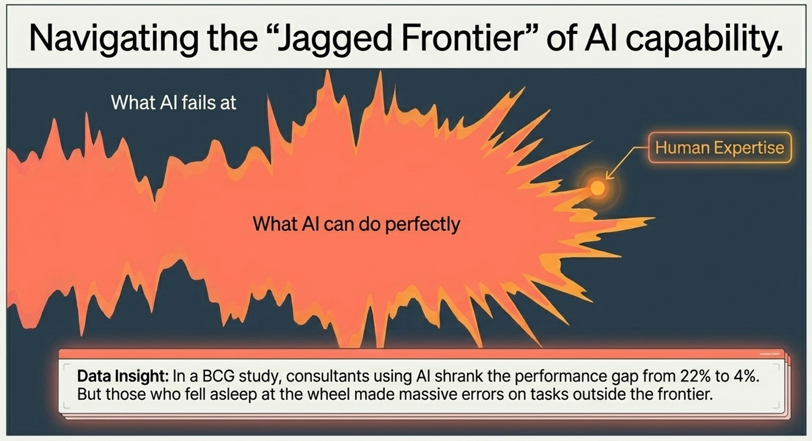
Imagine a fortress wall. Inside are tasks AI handles brilliantly. Outside are tasks it fails at — often without warning. The frontier is jagged, not smooth: AI can write a flawless legal brief and then fail to count the letters in a word. The problem is that no one can see the wall, and it moves outward as models improve.
You cannot wait for a map to be handed to you. HR's role is to encourage every team to experiment — to push until they find where the wall lies for their specific roles. The organisation that explores fastest learns fastest.
Assign one person per department to spend 30 minutes a week deliberately testing AI on tasks they currently do manually. Have them report back monthly on what worked and what did not.
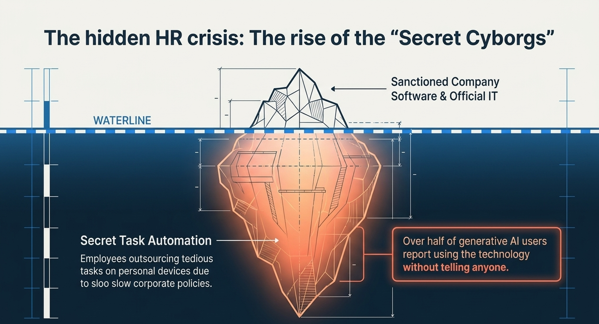
Employees are outsourcing tedious tasks to personal devices due to slow corporate policies. Over half of generative AI users report using the technology without telling anyone. They are not breaking rules out of malice — they are working around a system that has not caught up.
Sanctioned company software and official IT tools — the visible, approved technology stack your organisation believes it is using.
Personal devices, free-tier AI tools, unauthorised automations — the shadow layer that is already running in your organisation, invisible to leadership.
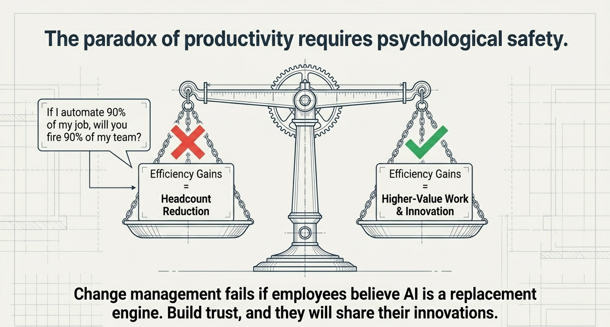
"If I automate 90% of my job, will you fire 90% of my team?" This is the rational fear that causes Secret Cyborgs to stay hidden. Without a clear leadership signal, employees will always assume the worst.
Organisations that redirect freed capacity toward innovation, client relationships, and strategic work — rather than cutting headcount — outperform on engagement, retention, and long-term productivity.
Make it safe — and make it worth it — to come forward. Create a programme that rewards employees who share AI automation breakthroughs:
Announce explicitly: "Using AI to improve your work will never be grounds for discipline or redundancy. We want to know what you have found."
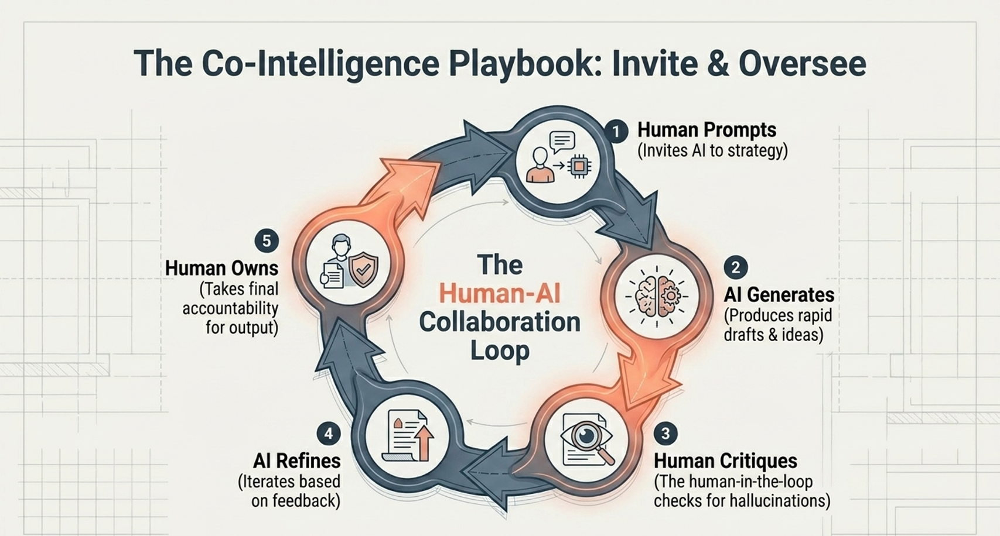
The human invites AI to the strategy table — setting direction, context, constraints, and the persona the AI should adopt.
AI produces rapid drafts, ideas, and options at a speed and volume no human team can match. This is the productivity engine.
The human-in-the-loop checks for hallucinations, bias, and errors of judgment. Expertise is what makes this step meaningful — AI cannot critique itself reliably.
AI iterates based on human feedback — improving, adjusting, and exploring alternatives faster than any revision cycle between human collaborators.
The human takes final accountability for the output. AI has no professional accountability, no reputation at stake, and no judgment about consequences. That responsibility stays with us.
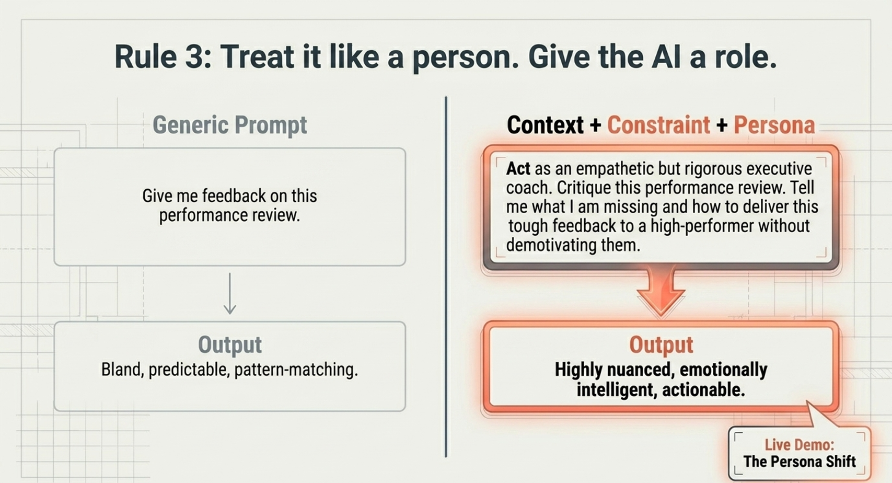
"Give me feedback on this performance review."
Output: Bland, predictable, pattern-matching. The AI has no frame of reference, no stakes, no expertise to draw from.
"Act as an empathetic but rigorous executive coach. Critique this performance review. Tell me what I am missing and how to deliver this tough feedback to a high-performer without demotivating them."
Output: Highly nuanced, emotionally intelligent, actionable.
Run this live with the audience. Take a real, anonymised piece of HR work — a job description, a policy clause, a difficult email — and show the difference between a generic prompt and a persona-driven prompt. The room will not forget it.
Sample personas to use: "You are a skeptical CFO" / "You are a senior employment lawyer in Singapore" / "You are a disengaged employee reading this policy for the first time."
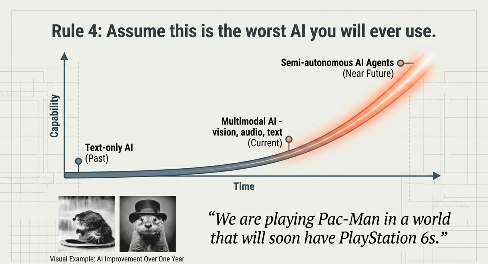
Basic text generation. Useful but narrow. This is where most organisations' mental model of AI is still stuck.
Vision, audio, text, code. Reasoning across modalities. Already vastly more capable than most enterprise deployments.
AI that plans, acts, and executes multi-step tasks independently. Do not build processes around today's limitations — this is coming faster than any previous technology transition.
Any AI governance policy you write today will need to be reviewed within 12 months — not because it was wrong, but because the technology will have moved. Build your frameworks to be principle-based, not tool-specific. The principles will outlast the tools.
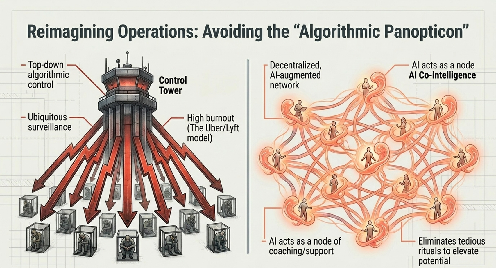
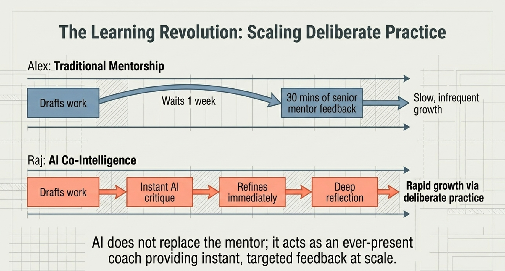
Drafts work
Waits 1 week
30 mins of senior mentor feedback
Result: Slow, infrequent growth
Drafts work
Instant AI critique
Refines immediately
Deep reflection
Result: Rapid growth via deliberate practice
It acts as an ever-present coach providing instant, targeted feedback at scale. Human mentors bring judgment, relationship, and wisdom. AI brings volume, availability, and patience. Together, they create a learning environment no previous generation of employees has had access to.
The Co-Intelligent Enterprise is built one decision at a time. Leave today with a commitment to act — not to study, not to consult, but to move.
"AI does not replace the human who knows how to work with it. It replaces the human who refuses to. HR decides which future your organisation is building toward."